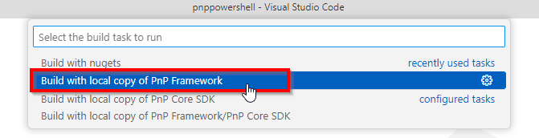
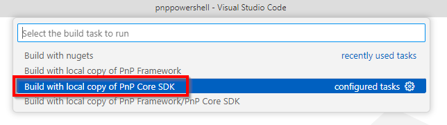

Running against a local copy of the PnP Framework
If your code changes require changes to the PnP Framework you might want to use a local version of the PnP Framework which you modified. In order to do this you will need to have both the PnP.PowerShell repository (https://github.com/pnp/powershell) and the PnP.Framework repository (https://github.com/pnp/pnpframework) locally on your computer. Make sure that both repositories are located at the same folder level. E.g.:
c:\repos\powershell
c:\repos\pnpframework
When using Visual Studio Code
Build the PnP Framework code by opening the folder containing the code in Visual Studio Code and hitting
CTRL+SHIFT+B. It may take a few minutes to complete.After its done, simply hit
CTRL+SHIFT+Bin the Visual Studio Code instance in which you have opened PnP PowerShell and at the top select the option to Build with local copy of PnP Framework
When using the full Visual Studio
Build the PnP Framework by navigating to the
buildfolder in thepnpframeworkfolder and runBuild-Debug.ps1. This will compile the PnP Framework.Navigate to the
buildfolder of thepowershellfolder and runBuild-Debug.ps1 -LocalPnPFramework. This will compile PnP PowerShell and refer to the -locally- compiled version of the PnP Framework. If you do not specify the-LocalPnPFrameworkswitch it will refer to the latest nightly build available on NuGet.org instead.
Running against a local copy of the PnP Core SDK
If your code changes require changes to the PnP Core SDK (meaning any of the PnP Core SDK libraries like: PnP.Core, PnP.Core.Auth, PnP.Core.Admin, PnP.Core.Transformation, or PnP.Core.Transformation.SharePoint) you might want to use a local version of the PnP Core SDK which you modified. In order to do this you will need to have both the PnP.PowerShell repository (https://github.com/pnp/powershell) and the PnP.Core repository (https://github.com/pnp/pnpcore) locally on your computer. Make sure that both repositories are located at the same folder level. E.g.:
c:\repos\powershell
c:\repos\pnpcore
When using Visual Studio Code
Build the PnP Core SDK by navigating to the
buildfolder in thepnpcorefolder and runBuild-Debug.ps1. This will compile the whole PnP Core SDK solution, including PnP.Core.Auth, PnP.Core.Admin, PnP.Core.Transformation, and PnP.Core.Transformation.SharePoint.After its done, simply hit
CTRL+SHIFT+Bin the Visual Studio Code and at the top select the option to Build with local copy of PnP Core
When using the full Visual Studio
Build the PnP Core SDK by navigating to the
buildfolder in thepnpcorefolder and runBuild-Debug.ps1. This will compile the whole PnP Core SDK solution, including PnP.Core.Auth, PnP.Core.Admin, PnP.Core.Transformation, and PnP.Core.Transformation.SharePoint.Navigate to the
buildfolder of thepowershellfolder and runBuild-Debug.ps1 -LocalPnPCore. This will compile PnP PowerShell and refer to the -locally- compiled version of the PnP Core SDK. If you do not specify the-LocalPnPCoreswitch it will refer to the latest nightly build available on NuGet.org instead.